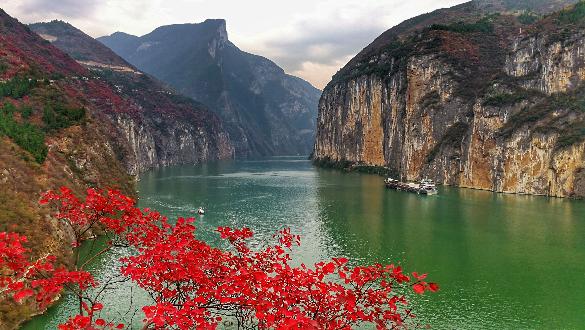
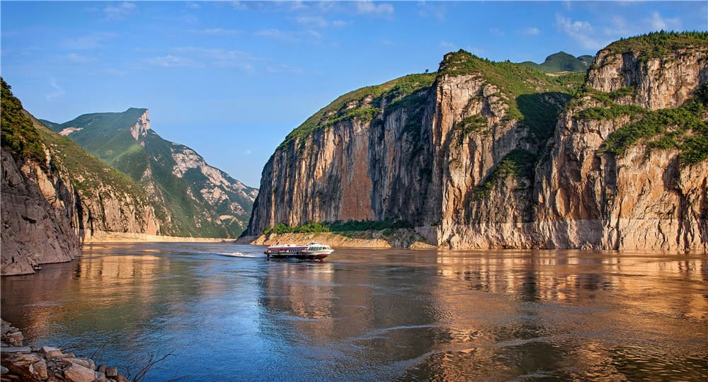
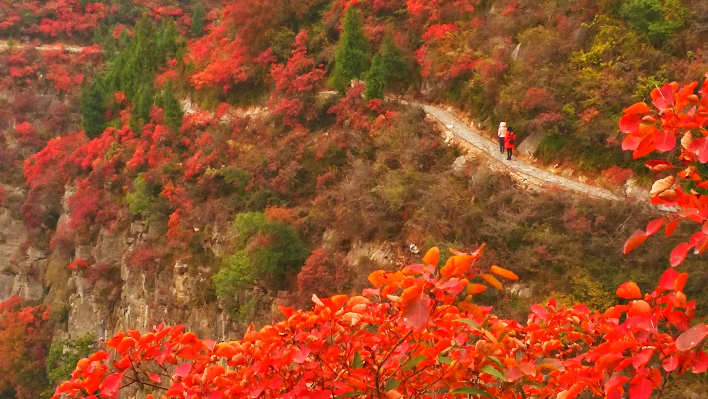

- 

- 
三峡之巅——瞿塘峡
MORE-
瞿塘夏景——素湍绿潭

瞿塘关,在瞿塘峡入口处 是长江三峡的西大门,又名“夔门”,在巍峨壮丽的白帝城下,是出入四川盆地的门户 。杜甫在另一首诗中写道：“白帝高为三峡镇，瞿塘险过百牢关”。从白帝城向东，便进入长江三峡中最西 面的瞿塘峡。它包括风箱峡和错开峡两段水峡，从白帝城到巫山县大溪镇（黛溪镇），全长约八公里，在三 峡中最短，了最为雄伟险峻。 “三峡束长江，欲令江流改。谁知破夔门，东流成大海”。陈毅同志这首气 势磅礴的诗篇中写到的夔门，在瞿塘峡入口处。它“岸崖又壁立”（郭沫若诗），就象巍然屹立在江面上 的巨大闸门，山岩上镌刻着“夔门天下雄”五个大字。因为奉节古称夔州，所以叫它夔门，瞿塘峡因此也 有“夔峡”之称。长江劈此一门，浩荡东泻，正如我国唐代诗人杜甫在《长江》一诗中所描写的：“众水 会涪万，瞿塘争一门。”咆哮的江流穿过迂回曲折的峡谷，闯过夔门，呼啸面去。
-
赤甲秋色——漫山红叶
它如旌旗飘扬，纤细娟秀对你含情脉脉；又如燃烧 的火焰，闪耀着丽日炫目的光彩对你热情似火。 在这诸多红叶中，又属奉节瞿塘峡红叶最是惹眼。 瞿塘峡雄踞长江三峡西之首，亦称夔峡，西起白帝城，东至巫山大溪镇，全长8公里，以其雄伟壮观而著称。 瞿塘峡红叶沿北岸的山梁由近及远一直延伸到赤甲山下。幽静的栈道两旁，斑驳的岩壁上是丛丛怒放的红叶，或枝桠挺立，或曲折低垂。
-
夔门夕阳——长河落日

瞿塘峡口冷烟低，白帝城头月向西。 唱到竹枝声咽处，寒猿晴鸟一时啼。 竹枝苦怨怨何人，夜静山空歇又闻。 蛮儿巴女齐声唱，愁杀江楼病使君。 巴东船舫上巴西，波面风生雨脚齐。 水蓼冷花红蔟蔟，江蓠湿叶碧萋萋。 江畔谁人唱竹枝，前声断咽后声迟。 怪来调苦缘词苦，多是通州司马诗。